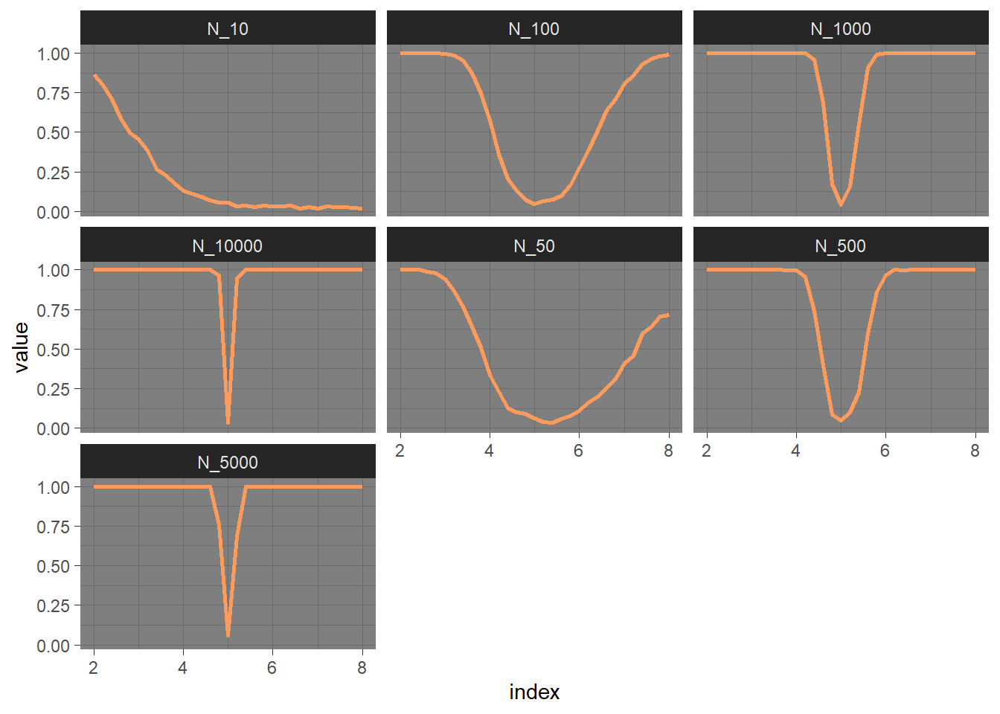
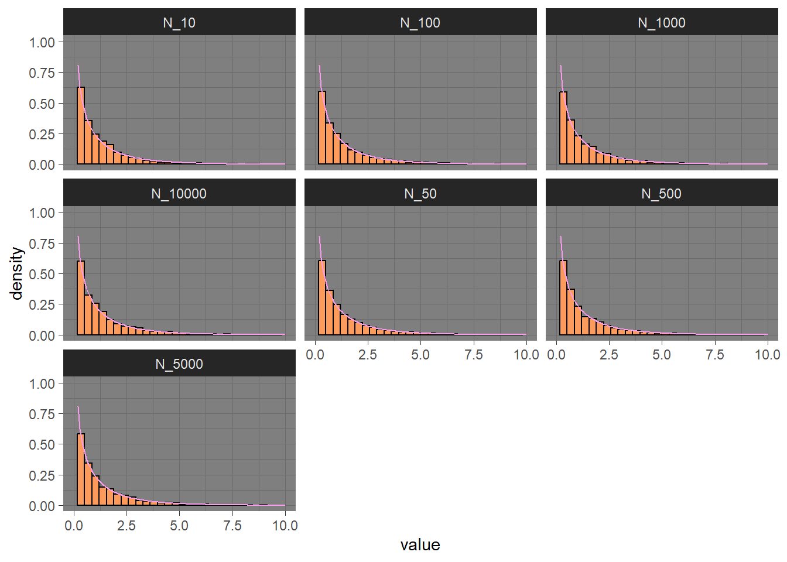
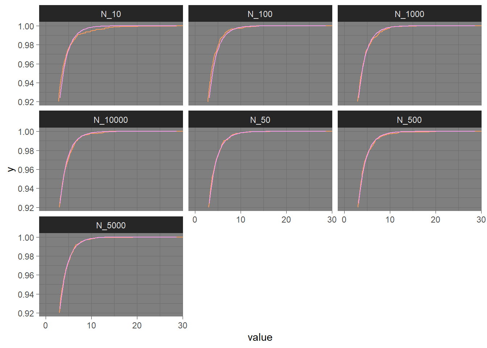

4 Teste Wald
4.1 Conceito e forma teórica
O teste avalia restrições em parâmetros estatísticos com base na distância ponderada entre a estimativa irrestrita e seu valor hipotético sob a hipótese nula, onde o peso é a precisão da estimativa. Intuitivamente, quanto maior essa distância ponderada, menos provável é que a restrição seja verdadeira. Embora as distribuições de amostras finitas dos testes de Wald sejam geralmente desconhecidas, ele tem uma distribuição \(X^2\) assintótica sob a hipótese nula, um fato que pode ser usado para determinar a significância estatística. (Ward and Ahlquist 2018)
A estatística de teste é dada por:
\[\frac{\sqrt{n}(\hat\theta-\theta_0)}{\sqrt{I_f(\theta)^{-1}}}\sim_{n\to\infty} X^2_1\]
Onde, no caso do modelo \(Beta(\alpha,1)\), a estatística do teste possui a seguinte forma:
\[\frac{\sqrt{n}(\hat\alpha-\alpha_0)}{\sqrt{\frac{\hat\alpha^2}{n}}}\]
4.2 Avaliação Computacional
n_size_vector=c(10, 50, 100, 500, 1000, 5000, 10000)
alpha=5
alpha_vector=seq(2,8,by=0.2)wald_test=function(data,H_0){
alpha_hat=beta_shape1_mle(data)
fisher_information=1/(alpha_hat^2)
w_value=(((alpha_hat-H_0)*sqrt(length(data)))/sqrt(1/fisher_information))^2
return(w_value)
}4.2.1 Poder do teste
power_decision=function(x){
return(ifelse(x>qchisq(0.975,1) | x<qchisq(0.025,1) ,1,0))
}
wald_power=sapply(seq_along(n_size_vector),function(i){
wald_power_step=sapply(seq_along(alpha_vector),function(k){replicate(600,rbeta(n=n_size_vector[i],shape1 = alpha_vector[k],shape2 = 1))%>%
apply(2,wald_test,alpha)%>%
unlist()%>%
sapply(power_decision)%>%
sum()/600}
)
return(wald_power_step)
})
tbl_wald_power=as_tibble(wald_power)%>%
rename(N_10=V1,N_50=V2,N_100=V3,N_500=V4,N_1000=V5,N_5000=V6,N_10000=V7)
pivot_wald_power_step=tbl_wald_power%>%
pivot_longer(cols = everything())
index=sapply(seq_along(alpha_vector),function(i){
rep(alpha_vector[i],7)
})%>%
as_tibble()%>%
pivot_longer(cols = everything())%>%
arrange(value)
pivot_wald_power=cbind(pivot_wald_power_step,index$value)%>%
rename('index'='index$value')
ggplot(pivot_wald_power, aes(x=index, y=value)) +
geom_line(linetype=1,linewidth=1.05,color='#FC9B5C')+
facet_wrap(~name)+
theme_dark()
Ao observar os gráficos, é possivel notar em quais tamanhos amostrais a função poder apresenta uma aparência desejável. Em um tamanho amostral menor que 500, nota-se que o teste apresenta uma alta probabilidade do Erro do Tipo II, ou seja, não rejeitar \(H_0\) quando \(H_0\) é falsa, mesmo quando o \(\alpha_0\) testado está distante do \(\alpha\) verdadeiro. Em um tamanho amostral igual ou superior a 500, a função passa a apresentar um comportamento melhor, onde a probabilidade de se rejeitar \(H_0\), com \(H_0\) falsa, vai para 1 e converge para o nivel de significancia de \(5\%\) ao se aproximar do \(\alpha_0\) verdadeiro. Para o tamanho amostral \(10.000\) é observado uma melhor precisão
A tabela a seguir apresenta detalhadamente a taxa de rejeição para cada tamanho amostral em \(\tilde\alpha=(2,2.2,2.4,2.6,...8)\)
df_alpha=data.frame(alpha=c(2,3,4,4.6,4.8,5,5.2,5.4,6,7,8))
df_power_wald_print=tbl_wald_power[c(1,6,11,14,15,16,17,18,21,26,31),]
df=cbind(alpha=df_alpha,round(df_power_wald_print,3))%>%
rename('$\\alpha$'=alpha)
df %>%
kbl(caption = 'Poder em Diferentes Tamanhos Amostrais, $\\alpha$ verdadeiro = 5') %>%
kable_classic(full_width = F, html_font = "Cambria")| $\alpha$ | N_10 | N_50 | N_100 | N_500 | N_1000 | N_5000 | N_10000 |
|---|---|---|---|---|---|---|---|
| 2.0 | 0.838 | 1.000 | 1.000 | 1.000 | 1.000 | 1.000 | 1.000 |
| 3.0 | 0.412 | 0.938 | 1.000 | 1.000 | 1.000 | 1.000 | 1.000 |
| 4.0 | 0.135 | 0.328 | 0.562 | 0.997 | 1.000 | 1.000 | 1.000 |
| 4.6 | 0.077 | 0.100 | 0.132 | 0.393 | 0.685 | 0.998 | 1.000 |
| 4.8 | 0.052 | 0.080 | 0.070 | 0.117 | 0.192 | 0.745 | 0.962 |
| 5.0 | 0.055 | 0.048 | 0.067 | 0.057 | 0.053 | 0.043 | 0.058 |
| 5.2 | 0.027 | 0.037 | 0.040 | 0.088 | 0.158 | 0.662 | 0.943 |
| 5.4 | 0.035 | 0.048 | 0.047 | 0.278 | 0.543 | 1.000 | 1.000 |
| 6.0 | 0.040 | 0.110 | 0.280 | 0.962 | 0.998 | 1.000 | 1.000 |
| 7.0 | 0.018 | 0.403 | 0.775 | 1.000 | 1.000 | 1.000 | 1.000 |
| 8.0 | 0.037 | 0.750 | 0.995 | 1.000 | 1.000 | 1.000 | 1.000 |
4.2.2 Distribuição Qui-Quadrado assintótica
chi_genarate_wald=sapply(seq_along(n_size_vector),function(i){
gen_samples=replicate(5000,rbeta(n=n_size_vector[i],shape1 = alpha,shape2 = 1))
apply(gen_samples, 2, wald_test,5)%>%
return()
}
)
tbl_chi_genarate_wald=as_tibble(chi_genarate_wald)%>%
rename(N_10=V1,N_50=V2,N_100=V3,N_500=V4,N_1000=V5,N_5000=V6,N_10000=V7)
pivot_chi_genarate_wald=tbl_chi_genarate_wald%>%
pivot_longer(cols = everything())
pivot_chi_genarate_wald%>%
ggplot(aes(x = value)) +
geom_histogram(aes(y =after_stat(density)),color='black',fill='#FC9B5C')+
stat_function(fun = dchisq, args = list(df=1),color='#FA9BEB')+
ylim(c(0,1))+
xlim(c(0,10))+
facet_wrap(~name)+
theme_dark()
pivot_chi_genarate_wald%>%
ggplot(aes(x = value)) +
stat_ecdf(geom = "step",color='#FC9B5C')+
stat_function(fun = pchisq, args = list(df=1),color='#FA9BEB')+
facet_wrap(~name)+
ylim(c(0.92,1))+
theme_dark()
k=sapply(seq_along(n_size_vector),function(i){
ks.test(tbl_chi_genarate_wald[,i],'pchisq',1)$p.value
})
df=data.frame(N_size=n_size_vector,p.value=k)
df %>%
kbl() %>%
kable_paper("hover", full_width = F)| N_size | p.value |
|---|---|
| 10 | 0.0404166 |
| 50 | 0.8935662 |
| 100 | 0.3876906 |
| 500 | 0.0255391 |
| 1000 | 0.8546328 |
| 5000 | 0.0522182 |
| 10000 | 0.7534175 |